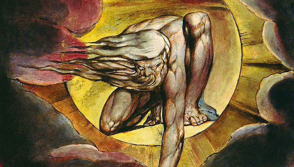

William Blake: The Seed of the Story
I first started writing about the War in Heaven as being a bitter divorce back in '92, when I was 14 years old, but William Blake had gotten there two centuries before - and done it a lot better!

I first wrote about God and the Devil as an ex-married couple in a book about witchcraft I wrote as a teenager. I thought it was a great idea. It made a lot of sense: we were created out of both sides, but one side of us - the side that came from the Devil - was being literally demonised and, as a result of rejecting this side of us, we were becomming unstable as a society. It was another five years before I discovered William Blakes Marriage of Heaven and Hell and realised that, as is often the case with a good idea, someone else had got there first.
Blakes writing (from 1790) tells the story of him being taken on a tour of Hell, but discovering that it is far from the nightmare we were beiing told. Blake's Hell is a place of energy and vision and creativity and vitality. The opening quote in my book comes from this moment: "And so I walked through the fires of hell / delighted with the enjoyment of genius / which to Angels look like torment and insanity." I love the idea that idea that his genius is the church's insanity. Lock 'em up! Shut 'em down!
A crucial part of Blake's vision of genius (and the Angel's vision of insanity) is the application of energy. To Blake desire and appetite were to celebrated, not repressed. Blake's Satan was closer to Pan in the old world - a creature of fun and fornication. "Energy is eternal delight," Blake writes, as one of the Proverbs of Hell. He encourages pushing boundaries - "You never know what is enough unless you know what is more than enough" - and wants us all to celebrate our uniqueness, no cower on our knees: "The pride of the peacock is the Glory of God" and "The road of excess leads to the palace of wisdom." Blake doesn't hold back either: a life un-lived is a worthless thing. Or, as he puts it: "Sooner murder an infant in its cradle than nurse unacted desires."
As I read the Proverbs of Hell, it was like awakening a part of myself that I'd always known was there. This was a wisdom that I'd always believed in, but had never seen written so clearly before: I felt seen, vindicated, justified. It wasn't that I wanted the world to turn to debauchery, I knew then and now that we need order to build a world, but the balance of the two is essential if we're going to progress with stability. At the moment, society seems far more hostile than it should be and I can't help but turn a gaze back to the religous orders that shackled us for so long and see the seeds of modernity.
In my book, Bill becomes Satan - Blake's Satan (which was Milton's really) - while Jo Over plays God: Urizon; a being who mistakes control and order for love and compassion. Phil's stuck between the two of them: control and order, or freedom and passion. And in the book, he's torn in the way a child is torn between two warring parents.
Possibly my favourite line from the Proverbs though is the one where Blake opens his doors of perception the widest, giving us the freedom to dream and create and forge our own worlds. Blake knew what religious folk around the world seem to have forgotten: that if God is infinite, then God is everything - which includes everything we see as bad and everything we see as great. Human potential, as we're realising now more than ever, needs the doors of perception to be jammed open, and at their widest. We need to dream bigger and deeper than ever before, and to do that, the first thing we must understand is the truth within our dreams because "Everything possible to be believed in an image of truth."
The potential is there. The world is ours. The only question is: what are we going to make of it?